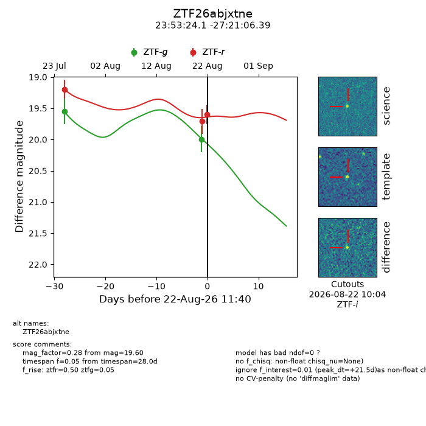
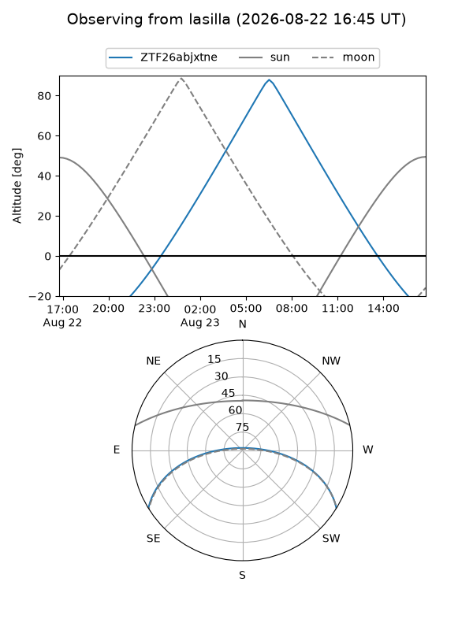
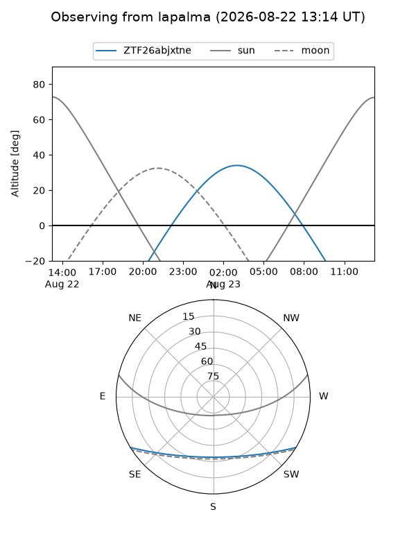
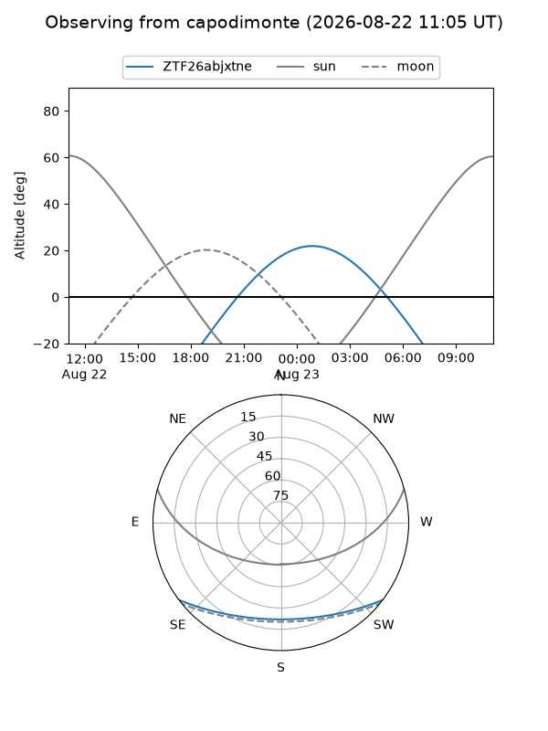
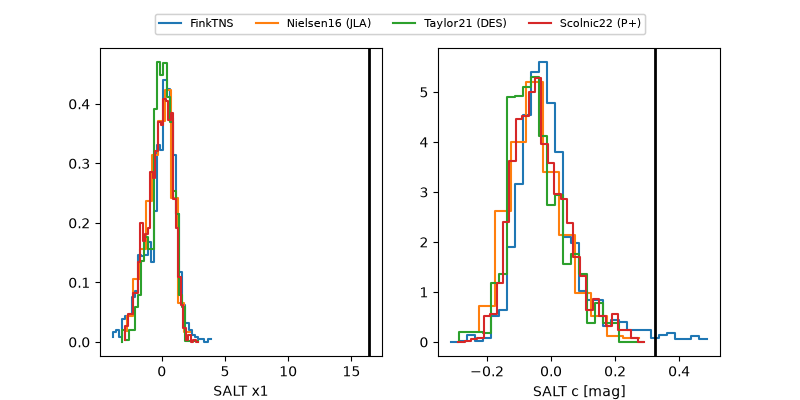

ZTF26abjxtne
Target ZTF26abjxtne at 2026-08-22 11:43
Aliases and brokers:
FINK-ZTF: ztf.fink-portal.org/ZTF26abjxtne
Lasair-ZTF: lasair-ztf.lsst.ac.uk/objects/ZTF26abjxtne
ALeRCE-ZTF: alerce.online/object/ZTF26abjxtne
Direct TNS query: direct search
alt names
ZTF26abjxtne (ztf,fink_ztf)
Coordinates:
equatorial (ra, dec) = 358.3504,-27.35177
equatorial (HMS+DMS) = 23:53:24.09,-27:21:06.39
galactic (l, b) = (28.6099,-77.10533)
Flags:
peak dt: +21.5
Photometry:
last ztfg=19.99, ztfr=19.60
2 ztfg, 3 ztfr detections
Lightcurve

Visibility



Additional plots
